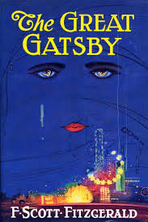
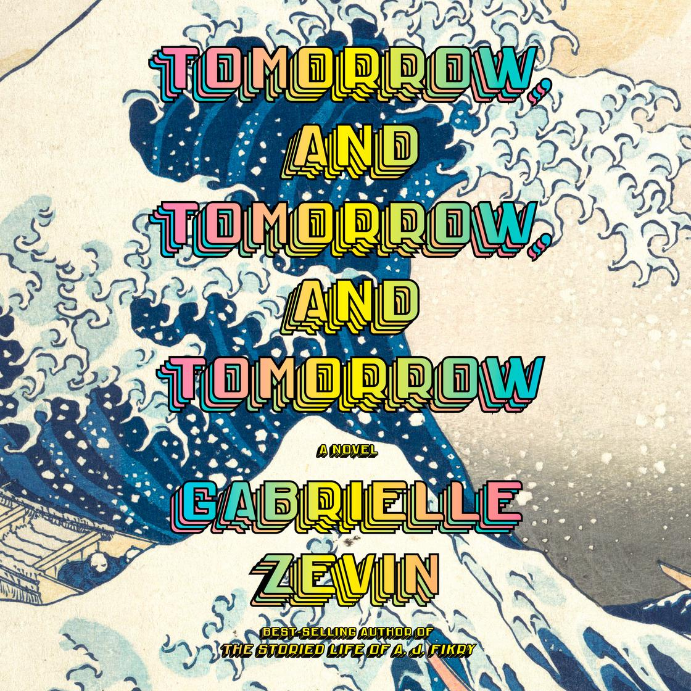
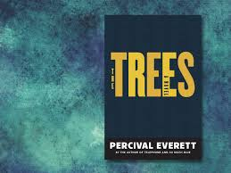

Book Reviews
The Great Gatsby

Rating: ★★★★☆
F. Scott Fitzgerald's "The Great Gatsby" is a classic American novel set in the Jazz Age, chronicling
the life of the enigmatic Jay Gatsby. Narrated by Nick Carraway, the story unfolds on Long
Island's Gold Coast, where Gatsby, a self-made millionaire, throws extravagant parties in hopes of reuniting
with his lost love, Daisy Buchanan. Gatsby's relentless pursuit of the American Dream and his
obsession with the past lead to a tragic downfall, exposing the emptiness and moral decay of the Roaring Twenties.
Read Full Review
The Book of Goose

Rating: ★★★☆☆
The Book of Goose by Yiyun Li: Set against the backdrop of 1960s China, this historical fiction follows
a young woman's journey through the tumultuous Cultural Revolution. As she navigates the complexities
of love, loss, and the changing political landscape, Li's poignant and intimate storytelling captures
the spirit of an era marked by both hope and despair.
Read Full Review
Tomorrow, and Tomorrow, and Tomorrow

Rating: ★★★★★
Tomorrow, and Tomorrow, and Tomorrow by Gabrielle Zevin: This heartwarming and humorous novel explores
the enduring bond of friendship. Two childhood friends, Sam and Sadie, embark on a lifelong journey together,
fueled by their shared passion for video games. As they navigate the highs and lows of their careers and
personal lives, Zevin's captivating storytelling celebrates the power of creativity and the enduring nature of friendship.
Read Full Review
All the Lives We Never Lived
Rating: ★★★☆☆
All the Lives We Never Lived by Anuradha Roy: This historical fiction spans generations, following the lives of two
women in India, exploring themes of family, identity, and the enduring power of love across time and space.
Read More
The Trees
Rating: ★★★☆☆

The Trees by Percival Everett: Set in a small town in Mississippi, this satirical novel delves into themes of race,
class, and justice, as a group of Black residents take drastic action to reclaim their history and demand accountability
for past wrongs.
Read More